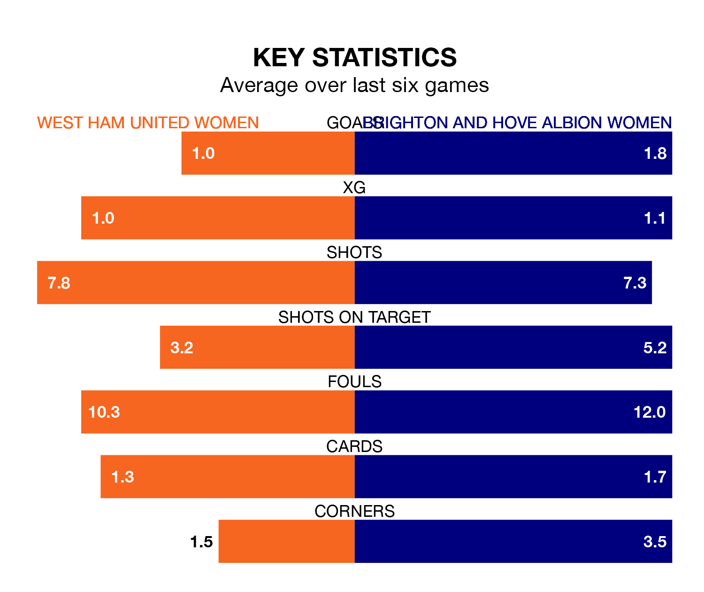

Brighton and Hove Albion Women travel to West Ham United Women on Sunday in the FA Women's Super League.
The visitors come into the game on the back of a win in their last match, having beaten Leicester City WFC 3-2 away, with goals from Elisabeth Terland, Katie Robinson and Madison Haley.
The Hammers, meanwhile, lost their last match, 2-0 against Chelsea Women.
West Ham United are 11th in the table after 17 games, of which they have won three and drawn three, earning 12 points.
Brighton & Hove Albion are three places ahead of the Hammers in eighth, with five wins and two draws putting them on 17 points.
In the last 10 years, West Ham United and Brighton & Hove Albion have played each other on 16 occasions. West Ham United won five of them, Brighton & Hove Albion nine, and they drew twice.
On average, the Hammers scored 1.2 goals and the Seagulls 1.8 in those matches.
Their last meeting was on November 22, when Brighton & Hove Albion won 3-1 at home.
In Terland, the Seagulls have one of the league's sharpest shooters so far this season. She has notched 12 goals in 17 appearances, to sit third in the scoring charts.
Her goal rate of one every 113 minutes is much quicker than that of Viviane Asseyi, the home team's top scorer with a goal every 243 minutes, and a total of six goals in 17 games.
With 17 goals in 17 games so far this season, West Ham United are the league's second-lowest scorers with 1.0 goals per game. And they are conceding more than average, letting in 35 goals at a rate of 2.1 per game.
The visitors are also below average scorers, with 1.4 goals per game, compared to a league average of 1.6. They have conceded 2.3 goals per game.
West Ham United are in mixed form in the FA Women's Super League, with two wins and a draw from their last six games.
With two wins and four losses over that period, Brighton & Hove Albion's form is slightly worse – they have taken six points from 18, compared to the Hammers' seven.
Updated: 12:39 (UTC), 26/03/24